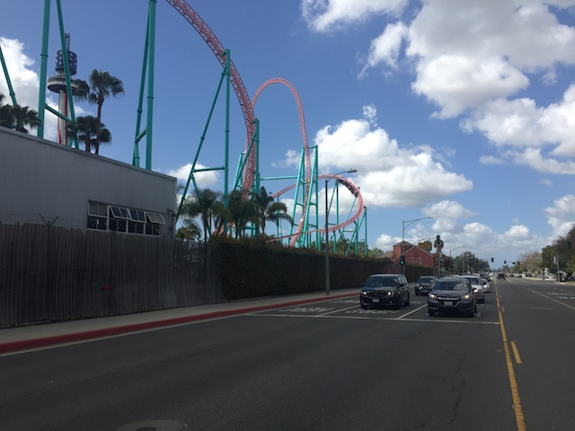
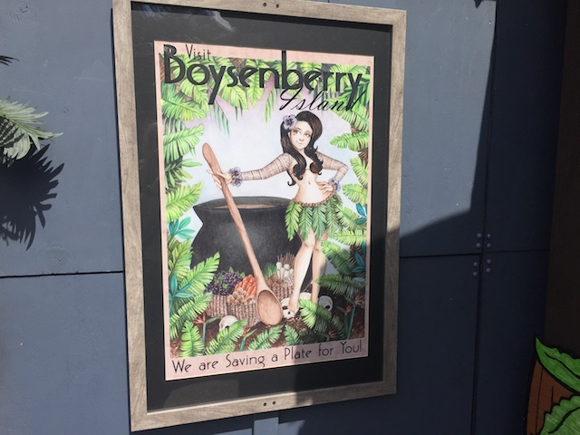
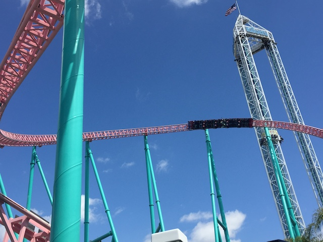

| |
Knotts Boysenberry Festival 2018
All right. Time for another update. We're back at Knotts Berry Farm as once again, the Knotts Boysenberry Festival is back. And this is the best time of year to go to Knotts Berry Farm. Seriously. If you only have one oppertunity to go to Knotts Berry Farm in the year, I highly suggest that you do it during the Boysenberry Festival. I know I can't call this my favorite theme park food festival since it's the only one I've done (Disney, you're so damn expensive!), but I absolutely love this festival. I loved it the last three years they had it, and I am happy that Boysenberry time is here once again. So let's all turn into foodies and see all that the Boysenberry Festival has to offer this year.
So happy that this festival has come once again.

All right. While parking my car in the overflow parking lot (Yep, it's gonna be packed today), I saw a car running. YAY!!! That must mean that it's testing, and if it's testing, then that means it's gonna open back up soon enough. I park my car, and start walking towards the park. I see Xcelerator running. But wait. I see something. It looks like...*gasp* HOLY SH*T!!! THERE'S PEOPLE ON THE TRAIN!!! XCELERATOR IS F*CKING OPEN TODAY!!! So I pulled out my phone and quickly snapped this crappy phone of the ride running, while in the middle of the crosswalk, because everyone must be informed that Xcelerator is back open!!! =D
 Aww. Xcelerator broke down and is closed again. Well...hopefully it opens back up later. =(
Aww. Xcelerator broke down and is closed again. Well...hopefully it opens back up later. =(
All right. Xcelerator may currently be closed (Hey, exactly as I was expecting. Hopefully it opens back up later), but now we can enjoy all that the Boysenberry Festival has to offer.
Time to get our tasting cards for this years Boysenberry Festival.
All right. The tasting cards are very different this year. Not only are they something to wear around your neck, which I really like, but unlike previous years, it's not a card where you get a hole punch for each item on the menu. Instead, they just give you 8 tabs, and you can use the tabs for any of the 8 items. So you don't have to get all of the items. You could forgo an item, and get multiple versions of something that you really like. So if you're someone who's a vegetarian, you could get the tasting card, forgo the meat items (You're missing out on some really great Boysenberry items), and get multiple versions of the vegetarian friendly stuff. I love this and applaud Knotts for doing this.
All right. First up, the Boysenberry Quesadillas. This should be intersting.
The Quesadilla itself was all right. It pretty much just tasted like an ordinary Quesadilla. Good, but not great. The boysenberry aspect of it is very mild. To the point where you don't even really notice. It just looks like a purple tortilla. But what is really good is the Boysenberry Salsa that it comes with as a dipping sauce. DAMN!!! That stuff is really freaking good. It's like jam at first. But then you notice, "Hmm. This is spicy jam. Oh wait. It's salsa. That makes much more sense". It's a great combination of sweet and spicy and really gives the quesadilla a nice kick. Oh, it also comes with sour cream. But you don't need that when you have Boysenberry Salsa. I really hope they bottle the salsa, because it is fantastic.

Ooh. Let's all go to Boysenberry Island.
Damn. Hangtime is looking really good. I see they're buiding the entrance right now.
 Can't wait to ride this soon enough.
Can't wait to ride this soon enough.
Next up, the Boysenberry Grilled Sausage Roll.
This has got to be a new Boysenberry favorite of mine. I absolutely love this. It's on par with other favorites of mine, such as the Boysenberry Wings & Meatballs (I miss those). First off, it's really good sausage overall. This is some good meat. Second, it's not just like the Wings or Meatballs (as much as I love those), where they just smother it in their amazing Boysenberry BBQ sauce. No, the sausage is infused with boysenberry, and you can tell. It has a little bit of a boysenberry zing to it, but it's still meat. It's still the sausage itself. So yeah. I f*cking love this thing.
And what coming out with the Boysenberry Sausage is Boysenberry ketchup and mustard. And yeah. This stuff is really freaking good. I want this out yearround. Seriously, they could totally have this to put on the burgers they serve. What a way to make your generic burger stand out from the rest of the theme park industry! =D

OMG!!! XCELERATOR IS BACK OPEN!!! GETTING IN LINE IMMIDIETLY!!!
Normally, I wouldn't bother getting in a line like this, with it being this crowded. But...not only is this the 3rd best coaster in California (and the best not at SFMM), but this coaster has been closed for 8 months. And considering that I promised to stop whatever I'm doing and drive down ASAP when I hear Xcelerator opening back up, and I just happen to be here the day it opens back up. Yeah. I'm getting back in line. Plus, we have yummy Boysenberry Sausage Rolls to enjoy while we wait.
 Clearly all these people are so happy that Xcelerator has returned to Knotts Berry Farm.
Clearly all these people are so happy that Xcelerator has returned to Knotts Berry Farm.
Normally, I'd be annoyed that they're only running one train during the Boysenberry Festival, when the park is extremely crowded, but considering that this is the first day it's back open since it's long hiatus (I still can't believe that I just coincidentally happened to be in the park the very day it opened back up), I'll accept this.
 *gasp* What are you doing talking about the Boysenberry Festival and Xcelerator!? Those things suck! You should be talking about Pony Express, which is after all, THE BEST RIDE EVER!!!
*gasp* What are you doing talking about the Boysenberry Festival and Xcelerator!? Those things suck! You should be talking about Pony Express, which is after all, THE BEST RIDE EVER!!!
It's been way too long since our last Boysenberry Meal. Time for the next tasting card item. Boysenberry Hummus.
Meh. It's hummus. Good, but nothing special. The boysenberry doesn't add to much to it. If you like hummus, you'll like this. Not much else to say other than, it's hummus.
Hmm. Not sure what Elote is. This should be interesting to try.
 OK. So Elote is basically Mexican corn on the cob, only coated with all sorts of stuff, like in the case at Knotts, boysenberry butter, mayonnaise, and cotija cheese. It's a popular street food in Mexico. And let me tell you. This is how you eat corn. I know during the first Boysenberry Festival, they had corn on the cob with boysenberry butter, which was just meh. This is a significant improvement and is so much better. I approve.
OK. So Elote is basically Mexican corn on the cob, only coated with all sorts of stuff, like in the case at Knotts, boysenberry butter, mayonnaise, and cotija cheese. It's a popular street food in Mexico. And let me tell you. This is how you eat corn. I know during the first Boysenberry Festival, they had corn on the cob with boysenberry butter, which was just meh. This is a significant improvement and is so much better. I approve.
Another new tasting card item this year would be the Boysenberry Macaroon. It's basically a coconut macaroon, only with boysenberry frosting on top. It's good and all. I liked it. But then I thought. Macaroons sound like Macarons, which almost have the same name. And while I like macaroons, I LOVE macarons. *gasp* Boysenberry Macarons!!! YES!!! DO IT!!! I WANT THEM!!! BOYSENBERRY MACARONS FOR KNOTTS BOYSENBERRY FESTIVAL 2019 PLEASE!!!
Out of all the Boysenberry Festivals, the only item that they have always consistantly had on the tasting card all four years would be the Boysenberry Wings. It's always here and always avaliable. And while I wish more stuff was always here, I'm super happy that the Boysenberry Wings are always a guarantee, as they really are a favorite on mine. So good.
 I know this isn't on the tasting card, but I just had to try the Boysenberry Boba Tea. I mean, I do generally like tea, and I particuarly really like Boba Tea. So this had my name all over it. And...THIS STUFF IS CRACK!!! I am in love with this drink. I really would love to have this yearround. Please.
I know this isn't on the tasting card, but I just had to try the Boysenberry Boba Tea. I mean, I do generally like tea, and I particuarly really like Boba Tea. So this had my name all over it. And...THIS STUFF IS CRACK!!! I am in love with this drink. I really would love to have this yearround. Please.
I know we're here to primarily eat (and finally get on Xcelerator again). This is far more of a food update than a roller coaster update. But I feel that it's time for another coaster. The line for Montezooma isn't that bad compared to other things in the park. Oh, and again, the Montezooma fastpass really bothers me. I mean, you're having a group so large, that they take up AN ENTIRE FREAKING TRAIN!!! You are not a natural group. Plus, they didn't quite take the entire train. They left one row empty. Our row. But they just sent it out empty. Ugh. They really have to add some merge point, or something besides just having a sea of people swarm up the exit. Well, at least Montezooma was a ton of fun.
All right. Never had Pierogi before, so it should be good to try it at the Boysenberry Festival.
And now for the bad news. I didn't like the Pierogi. I know other past items, such as the Boysenberry Raviloi, and Pizza, I wasn't crazy about either of those. But they still tasted good enough. Not good where I crave them and want to eat them again. But they weren't bad. This...I just did not like the way this tasted. And from reading more about Pierogi, it seems weird as from reading about it, it seems like the type of food I would like. I like pasteries. I like meat. I like cheese. I like fruit. All of which are common fillings in Pierogi. I mean, they're filled with cheese. But...this cheese just didn't taste good. Particuarly with Boysenberry. I wanted to like this, but I just didn't. =( It might possibly be my least favorite Boysenberry item, only possibly being beaten out by the alligator (That stuff is way too fishy. Not a good meat). If I did this again, I would just skip the Pierogi and get a second Boysenberry Sausage, since that stuff is amazing. Well, I'll do that if they have the Pierogi on the tasting card in 2019.
Making a comeback this year would be the Boysenberry Ribs. My thoughts are still the same. Really good ribs, just a pain in the ass to eat with too much bone.
Ooh. Pretty chocolate fountain. Apparently, this is for the Boysenberry Cheesecake. That's always sounded really good. I just never get it because we always get the Fun Bun & Fun Stick instead.
Speaking of the Fun Bun & Fun Stick.... =)
These two things are just so damn good, and so damn filling, that we can't help but to get and split these two items every single year. Oh, and Fun Stick is still better than Fun Bun. I continue to stand by that. Fight me Evan! #TeamFunStick
And that was this years Boysenberry Festival. I want to thank Knotts for hosting another great event, and coming up with some amazing new things, such as the Boysenberry Sausage and Boysenberry Boba Tea. And with Xcelerator opening up today, that made the day even more special. I can't wait to come back when Hangtime opens, and to enjoy next years Boysenberry Festival.
Home
|